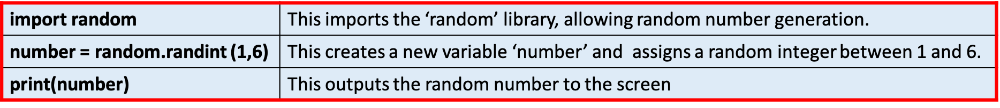
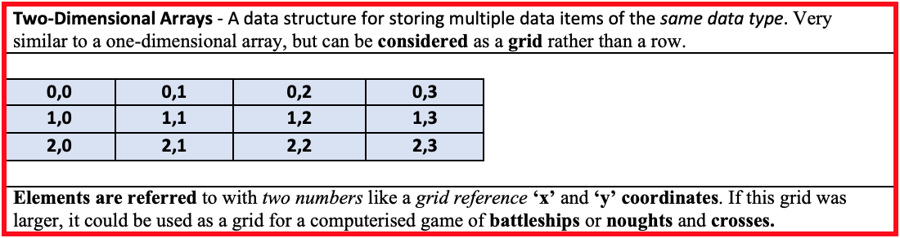

3.2.4 Data Structures
Table of Contents
1 Data Structures
Learn It: What are Data Structures?
Data structures – In the context of Computer Science, an array is a collection of data items that are stored together in a clear, structured form. A data structure provides an efficient method for managing large amounts of data and organising it data to make it suitable for computer processing. There are different types of data structures, including arrays (lists), records (tuples, dictionaries) and files, which are used in different situations.
Arrays - A collection of data items of the same data type that are stored under a single identifier (name). The items within the array are called elements, they can be accessed by referencing their position within the array. The exact number of elements needs to be known at the start, as the number of elements cannot be increased dynamically within the program once it has been compiled or intepreted unlike a list.
- Array is a
common term in programming, but in Python arrays arecalledlists. - This slightly complicates things as in programming arrays
can only storedata items of the same data type, but inPython arrays (lists)can store any type of data. - When you hear the term array think of it as a list in
Python. - Lists can be expanded upon dynamically by simply appending new elements to the end of the list.
- Many data structures exist, and it is even possible to invent your own. In GCSE Computer Science, you need to be familiar with:
- One-Dimensional Arrays.
- Two-Dimensional Arrays.
- Records.
Records - A data structure that can accept multiple data items that do not need to be of the same data type. The values are stored sequentially like records within a database. As far as Python is concerned, there is no difference between an array and a record, so they are managed in the same way. One record might store a student's name, year group and average test score.
Please Note - Python does not use arrays or records, it uses lists and dictionaries instead. Lists allow combinations of data types, so they behave more like records than arrays. When it comes to your exams, you wll be expected to be able to describe arrays, both one-dimensional and two-dimensional, as well as records.
2 One-Dimensional Arrays
Learn It: What are One-Dimensional Arrays?
- One-dimensional arrays are the
simplestarray structures to use. Think back to the variables we have been using, they allallow a single valueto be stored in asingle name. That is great for small single items of data but arrays (lists)allowyou tostorelots of data under asingle name. - Think of a one-dimensional array as a
row of variables, instead of each one having a name, the whole array hasa single name. - While
each elementin the array has anindex number, indicated in the table below. - A one-dimensional array might store a student's most recent spelling test scores:
- This program processes 10 numbers using a simple array of integers called
score. Imagine a table with one row of 10 boxes. - Each box in the table can contain an
integer. - Each box has a
numerical referencecalled anindexthat is used toreferencean individual data item. - Note that the
first elementan the array isalways zero. Thethird elementof this array is referred to asscore[ 2 ]. - At the start of a program we have to
define the array, just like we do with a variable, so we would do the following:
score = [1, 2, 3, 4, 5, 6, 7, 8, 9, 10]
Some basic operations on arrays (lists):
- The individual boxes in the array can be used just like variables:
- Assign values to them:
score = [4] ← 27
- Input values into them from the keyboard or a file:
score = [4] ← USERINPUT
- Output the value stored at index position 3 to the screen or a file:
OUTPUT "The fourth value is ", score [3]
- Benefits of using Arrays are:
- Code is much easier to follow and therefore easier to debug and maintain.
- A group of data items can be easily processed using a FOR loop.
- When you process data held in an array, you typically do the same thing to each data item, so having them stored in numbered locations makes this much easier and quicker to code.
Operations on Arrays (Lists):
- Some
array (list)methods are shown in the table below. Assume a = [45, 13, 19, 13, 8]
- Note that len () is a
functionand not amethod, and is written in a different way.- One-Dimensional Array Example:
total ← 0
FOR game ← 0 TO 11
score [game] ← USERINPUT
total ← total + score [game]
ENDFOR
OUTPUT "Total is ", total
Creating and using a One-Dimensional Array
- Step 1: To set up an array you can define it with or without the contents straight away.
- Step 2: Once the array has been created you can print out the whole list or you can choose to print a specific item from that array. Don’t forget that it always starts counting from 0.
- Step 3: If you wanted to
overwrite an existing item(change one item to another) you can easily do that. In this example we arechangingGeorge to Seb, so that George willno longerbe in the list and Seb will have replaced him.
- Step 4: You may want to see the
length of the array/list(how many items are in the array) and this is easy to do so too.
- Step 5: You may want to
add a new itemto theendof the array/list.
- Step 6: You may also want to
delete specific itemsfrom the array/list.
- Note: You may notice that when the whole array/list is being referred to it appears in round brackets. However, when a single item in the array/list is being referred to this is done using square brackets. Square brackets are always used to refer to an individual item in the array/list.
Learn It: Random Number Generation
Random - A random number can be selected from a range of numbers, if every number in that range had an equal chance of being selected.
- It is often
useful, especially ingames programming, to generate arandom number. - For example, suppose you want to
simulatethrowing asix-sided die:
number ← RANDOM_INT (1,6)
Random Integers In Python: 
- This code will generate a random number between 1 and 6.
Random numbers have many uses in computer science, for example:
- Encrypting data, making it difficult for unauthorised people to understand.
- Creating simulations, such as flight simulators, to run differently everytime.
- Adding variability to computer games, i.e. Enemy units might have behaviour that varies.
- Random sampling of survey participants, i.e. Randomly selecting names from a list.
Badge It: Coding Challenge 1
Silver - Throwing a Die Code Challenge
- Using the Trinket below, write a program that simulates throwing a six-sided die 1000 times.
- An array called face[1..6] is to hold the number of times each number (between 1 and 6) is thrown. Print out the number of times each number is thrown. (4 Marks)
- Amend the program so that the array face starts at index 0, i.e. the array is face [0..5]. (2 Marks)
Upload to Fundamentals of 3.2 Programming - 3.2.4 Data Structures in a Programming Language: Silver on BourneToLearn
3 Two-Dimensional Arrays
Learn It: What are Two-Dimensional Arrays?
Two-Dimensional Arrays – So far we can see that a one-dimensional array can be seen as a linear structure. Therefore if we have an array of arrays then they can be expressed as a two-dimensional array. Treat a one-dimensional array as a single line within a textbook, where each word can be referenced by it's position within the line. Therefore a two-dimensional array as multiple lines within a text book, where you not only have to say 3rd word within a line, but also have to specify which line you are referring two. A two-dimensional array is declared using two values - the number of rows and the number of columns.
 Creating a Two-dimensional array:
- So far, we have looked at a simple one-dimensional array. We will now look at the slightly more complicated two-dimensional array.
- In a one-dimensional array the
structure is flatand only allows one row of data. - As a teacher is likely to have
lotsofdifferent pieces of datafor each student, for example they may need tostoretheir maths and English grades.
The table of data is more likely to look like this:
- Arrays
do notneed to know about the titles of the columns, so these areignoredand instead you need to concentrate on thewhite sectionof the table, where you will see thatfor each rowthere areseveral columns. - The rows are for each
individual studentand the columns are for thescorethey have got in each subject. - When referring to a
cell(individual piece of data) you need toidentifythe row and then the column. - For example, to get Sofia’s English score it would be
students[ 3 ][ 2 ], don't forget that everythingstarts countingfrom 0.
Creating and using a Two-Dimensional Array:
- Step 1: Using a two-dimensional array is very similar to using a one-dimensional array, you just need to remember to include the
[row]and[column]. - To create a two-dimensional array in
pseudocodeyou need to write:
students ← [["John",53,69],["Lara",78,80],["George",72,53],["Sofia",80,76],["Oliver",43,27],["Thomas",56,28]]
- Notice each separate row has
its own setof square brackets. - Also note that data that needs to be treated as a string has
speech marks, but data that needs to be treated as anumber(as an integer or floating point) does not have speech marks. - Step 2: To create a two-dimensional array/list in Python, type the following:
Use the table of instructions to perform various operations on the students two-dimensional array/list:
- Use the Trinket window below to perform the operations as shown in the table above.
Try It: Coding Challenge
- Write an algoirthm to allow a user to enter the
10 test scoresfor each student, and calculate and output the average mark by each student. - The student names are held in an
array studentName [0..29], so for example,student [ 0 ]contains the name George C. - An array
total [0..29]will hold the* mark* for each student. - Am array
average [0..29]will hold the average mark for each student. - The program should
promptthe user: "Enter 10 marks for George C" and thenstorethe marks inputted by the user.
#Initialise array to hold total marks
FOR n ← 0 TO 29
total[n] ← 0
ENDFOR
#Input names and marks
FOR n ← 0 TO 29
OUTPUT "Enter marks for ", studentName[n]
FOR mark ← 0 TO 9
classScores[n][mark] ← USERINPUT
total[n] ← total[n] + classScore[n][mark]
ENDFOR
ENDFOR
FOR n ← 0 TO 29
average[n] ← total[n], average[n]
ENDFOR
- Q1: Write an algorithm that allows a user to
enter a student number, which thenoutputstheirname, each oftheir 10 scoresand theiraverage score. (Remember that array indices start at 0, but the students will be numbered 1 to 30)
Badge It: Coding Challenge 3
Gold - Battleships Code Challenge
- Using the Trinket below to look at a simple working battleships game using lists.
- Make the following changes to the game:
- a) Edit the code to enable a user to place the battleship on the grid.
- b) Change the code so that the user can add an additional ship.
- c) Make this a two player game.
- d) Add a scoring system to keep a tally of the scores.
- And add comments to each line of code to explain what function it performs? (12 Marks)
Upload to Fundamentals of 3.2 Programming - 3.2.4 Data Structures in a Programming Language: Gold on BourneToLearn
4 Records (Dictionaries)
Learn It: What are Records?
Records – Is a data structure that groups together related data items. These are more complex than arrays, as you can store more than one type of data together under one identifier. For example, with a game, it would be useful to set up a data structure which collects a player's login and their score in one structure. Creating records will vary in different languages. Python uses a data structure called 'dictionary' that has some features of the record structure.
- Earlier in this topic we looked at arrays. An
arrayis acollection of data itemsstored underone identifier, so that data items can be processed easily. - When we
group data items togetherso they can be treated as aset of data, we refer to this as adata structure. - A dictionary
storesdata items in pairs, with each pair consisting of akeyand avalue. - It
functionsjust like aprinted dictionary, where you can look up a word (the key) and find its definition (the value). - Like an array/list, a dictionary is
mutable, meaning that itsvalue can be changed. - A dictionary is written using the
curly brackets{ }, with each key value pair being separated by commas.
Example 1, in the code written below, the dictionary is called studentMarks and contains a number of student names and the mark they obtained in a test:
#Student Marks Dictionary
#The first line defines a new dictionary:
studentMarks = {"Owen":7, "William":9, "Libby":5, "Keira":8}
#The following code will return all three records in the dictionary:
print(studentMarks)
>>> {"Owen":7, "William":9, "Libby":5, "Keira":8}
#The following code will return Libbys mark in the dictionary:
print(studentMarks["Libby"])
>>> 5
- To look up the
markobtained by a student (the key), write the name of the dictionary followed by the key in square brackets [ ]. - You cannot index a dictionary in the same way as a list by using an index number. An item can only be
accessedthroughits key. - Q1: Write a statement to print the mark obtained by Keira?
Example 2, in the code written below, the dictionary is called players, that defines a player's name, their login and their score as one record:
- We have two players,
KatieandPatrick. We will use a dictionary to record the player names; Katie and Patrick with their logins and scores. - Katie's login is
kat10and her score is124. - Patrick's login is
pat00and his score is99. - The first line defines the
dictionary data structurewith two records of a player's name, login and score. - Be careful with the precise use of the syntax such as
:and{} curly bracketswith each key value pair being separated bycommas:
#Players Dictionary
#The first line defines a new dictionary:
players = {"Katie": {"login":"kat10", "score":124 },"Patrick": {"login":"pat00", "score":99 }}
#The next line adds a new record to the dictionary:
players["Tom"] = {"login":"tom13", "score":121}
#The following code will return all three records in the dictionary:
print(players)
>>> {'Katie': {'login': 'kat10', 'score': 124}, 'Patrick': {'login': 'pat00', 'score': 99}, 'Tom': {'login': 'tom13', 'score': 121}}
#And this line of code would remove Katie's score:
del players["Katie"]
print(players)
>>> {'Patrick': {'login': 'pat00', 'score': 99}, 'Tom': {'login': 'tom13', 'score': 121}}
Dictionary Methods Table
- The table below shows some of the most useful built-in dictionary methods:
Basic Dictionary Methods
- In the Trinket windows below are examples of several dictionary methods, try them to see the results.
Badge It: Coding Challenge 4
Platinum - Phone Extensions Code Challenge
- Using the Trinket below, write a program which stores a dictionary of names and 2-digit telephone extensions.
- Display a menu of options from which the user can choose:
- A. Loop up a telephone number.
- B. Add a new name and telephone number.
- C. Edit a telephone number.
- D. Delete an entry.
- E. Print phone directory in name sequence.
- F. Quit.
Upload to Fundamentals of 3.2 Programming - 3.2.4 Data Structures in a Programming Language: Platinum on BourneToLearn